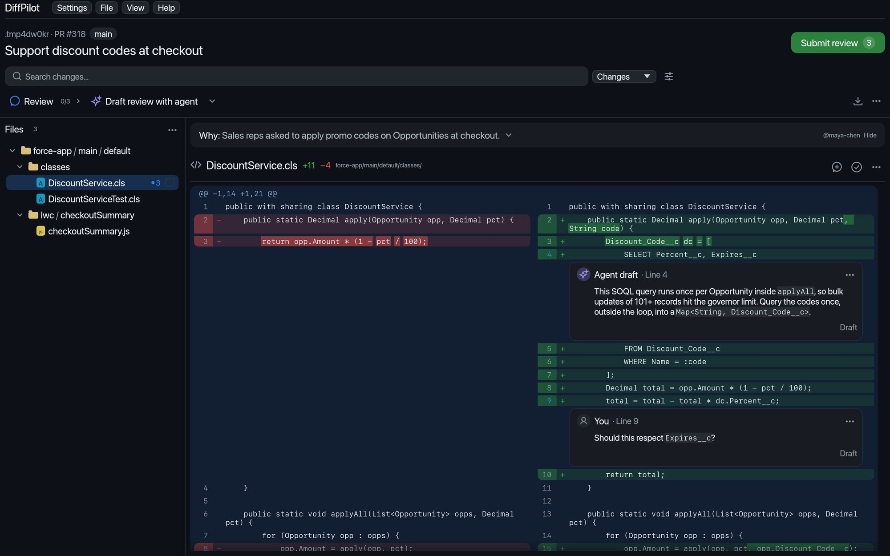

Readable diffs
Unified or side by side, with word level highlights, line numbers, wrapping and GitHub style themes.
DiffPilot is a native diff and code review app for Git. Open it from the terminal, use it as your difftool and mergetool, comment on any line, and send the comments to Claude Code, Codex or OpenCode in one message.

Terminal diffs are hard to read, browser review breaks your flow, and copying comments into an agent chat by hand loses the line numbers. DiffPilot keeps the whole loop in one window.
git diff output in a terminal with no word highlighting.Built in Rust for speed. Local changes, commits, pull requests and binary files all open in the same review view.
Unified or side by side, with word level highlights, line numbers, wrapping and GitHub style themes.
Run dip in any repository. Pass revisions, paths, a PR number, or pipe a patch in.
Set DiffPilot as git difftool and git mergetool with four lines of config.
Ask about a change, draft a review, or fix every comment with any Agent Client Protocol agent.
Browse PRs waiting for you, import their comments, and submit a review without opening a browser.
Compare images by swipe, onion skin or pixel difference. PDF pages show changed words boxed.
Every screenshot is the actual app, rendered at Retina resolution.
Press Draft review with agent. Comments land on the lines they talk about, ready for you to edit, keep or delete.
Select lines and choose Ask agent. The answer shows up in the side panel, with risks and a suggested fix.
With --dir-diff, all changed files open in one window with a file tree. Copy a block from one side to the other with the arrow buttons.
Local, base and remote sit side by side for every conflict. Pick a side, combine both, or type the resolution, then Save and exit.
Review requests, your own PRs and assignments in one list, through the GitHub CLI you already use.
Side by side, swipe, onion skin or difference. Changed areas are boxed and the percentage of changed pixels is shown.
DiffPilot opens on the first page that changed and boxes the changed words. Switch to Visual for layout changes.
GitHub light and dark plus a gallery of editor themes, adjustable fonts, custom shortcuts and 15 interface languages.
Review once, keep every note on its line,
and send them all to your agent in a single message.
The dip command starts the app on exactly what you want to look at. Full CLI reference
# everything not yet committed $ dip # only staged, or only unstaged $ dip --staged $ dip --unstaged # limit to some paths $ dip src/main.rs README.md
Run it inside a repository, or point at one with dip -C ~/code/other-repo. The view refreshes as you edit files.
# the last commit $ dip HEAD~1 HEAD # a feature branch against main $ dip main..feature/discount-codes $ dip --from main --to feature/discount-codes # your working tree against the remote branch $ dip . origin/dev
Anything Git accepts as a revision works: tags, SHAs, A..B ranges.
# two files or two folders, no Git needed $ dip --compare old/config.json new/config.json $ dip --compare release-1.4/ release-1.5/ # copy blocks between two files and save $ dip --compare-edit left.yaml right.yaml # comment on whole files, not just a diff $ dip --files # any patch from stdin $ git diff | dip -
You can also drop a folder on the Dock icon, or choose DiffPilot from Open With in Finder.
# by number, URL or branch (needs the GitHub CLI) $ dip --pr 318 $ dip --pr https://github.com/acme/revenue-cloud/pull/318 # start a review over, clearing saved comments $ dip --pr 318 --clean
Sign in once with gh auth login. GitHub Enterprise works through GH_HOST.
[diff] tool = dip [difftool "dip"] cmd = dip --compare "$LOCAL" "$REMOTE" [difftool] prompt = false [merge] tool = dip [mergetool "dip"] cmd = dip --merge "$LOCAL" "$BASE" "$REMOTE" "$MERGED" trustExitCode = true [mergetool] prompt = false
Then run git difftool --dir-diff or git mergetool. Step by step guide
Run dip, git difftool, or pick a pull request from the PR list.
Select lines, write a note, and mark each file reviewed. Comments are saved per review.
Send the comments to your agent with Fix comments with agent, or submit them to GitHub as a review.
DiffPilot has no server, no account and no analytics. It only talks to tools you install and sign in to yourself.
Comments, review state and settings live in ~/Library/Application Support/dip on your Mac.
File edits and commands from an agent wait for your approval unless you turn that off. Agents are kept out of .git.
Local review needs only Git. Pull request features use the gh CLI under your own login.
DiffPilot is free. There is no account, subscription or in app purchase.
macOS 11 Big Sur or later, on Apple silicon and Intel Macs.
dip command after installing the app?Link the binary inside the app into your PATH once:
ln -sf /Applications/DiffPilot.app/Contents/MacOS/dip ~/.local/bin/dip
See Install the command line tool for other options.
Yes. Add the config shown in the Git tools guide. The mergetool writes the merged file and tells Git whether you finished, so trustExitCode works.
No. Diffs, comments, the difftool and the mergetool all work with only Git installed. GitHub and agent features turn on when you set them up.
Any agent that speaks the Agent Client Protocol. Presets are included for Claude Code, Codex and OpenCode, and you can enter a custom command.
DiffPilot itself sends nothing anywhere. If you use an agent, what it sends to its model provider follows that agent's own settings. GitHub features go through your gh login.
Any text or source file with syntax highlighting, plus Markdown and Mermaid previews, Jupyter notebooks, images (PNG, JPEG, GIF, WebP, BMP) and PDFs. Other binary files can still be commented on and marked reviewed.
Visual Studio Code or Zed. Pick one during first run setup or later in Settings.
Open an issue on GitHub. The Support page lists what to include.
Free on the Mac App Store. No account, no subscription, nothing to cancel.
Prefer a direct download? See GitHub releases.